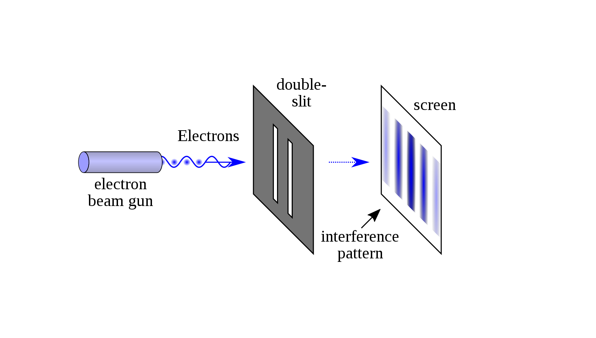
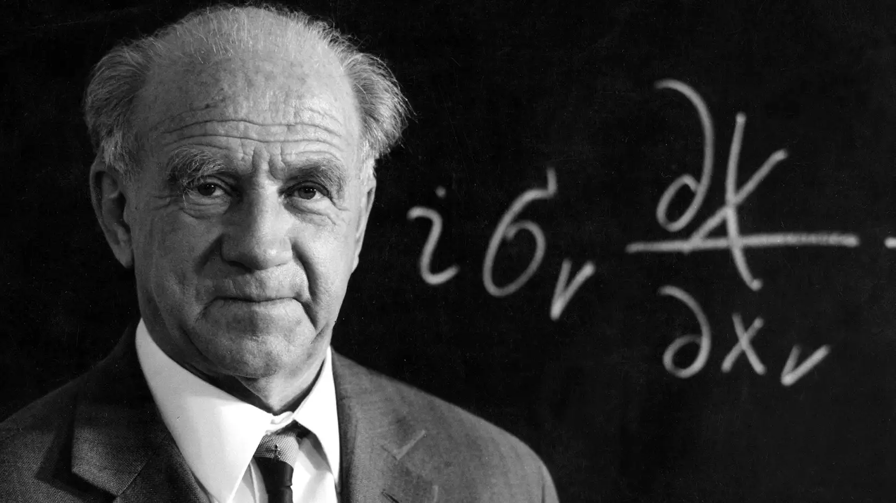
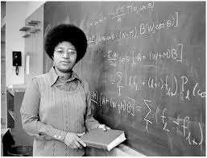

Background
In ancient times, scholars such as Democritus and those who authored the Vaiśeṣika Sūtra, proposed that matter consisted of indivisible atoms, laying foundational ideas from the 6th to the 2nd century BC. This concept evolved with John Dalton's 18th-century work, where atoms were conceptualized as fundamental units of chemical elements.
Post-World War II, rapid advancements in theoretical and experimental atomic physics ensued, driven by leaps in computing power facilitating intricate atomic models and collision simulations. Experimental progress was also propelled by innovations in accelerator technology, detectors, magnetic fields, and laser applications.
Wave-Particle Duality
William Henry Bragg, who won the Nobel Prize with his son Lawrence for their work on X-ray crystallography, described how scientists were amazed when they first understood the dual nature of light:
"On Mondays, Wednesdays and Fridays light behaves like waves, on Tuesdays, Thursdays and Saturdays like particles, and like nothing on Sundays." -William Henry Bragg

Werner Heisenberg

"The concepts of Hinduism are essentially consistent with those of modern physics. For instance, the unity of all things, the idea that the observer and the observed are not separate, the concept of complementarity – all these are basically Hindu concepts. In Hinduism, the observer and the observed are not separate because they are both manifestations of the same underlying reality, which is Brahman." - Werner Heisenberg in his book, "Physics and Beyond"
Heisenberg in Nazi Germany
Werner Heisenberg, the renowned German physicist known for his work in quantum theory, lived through significant challenges during the Nazi regime. Despite his affiliation with the German Evangelical Church, Heisenberg faced hostility from the SS publication Das Schwarze Korps, which disparaged him as a "white Jew" and suggested he should be removed. To protect him, Heisenberg's mother sought help from Heinrich Himmler’s mother.
In 1933, the same year Heisenberg won the Nobel Prize, the Nazi Party’s rise to power led to the exclusion of many “non-Aryan” and politically unreliable academics, including notable figures like Born, Einstein, and Schrödinger. Heisenberg, who responded with subtle bureaucratic maneuvers rather than public protest, hoped the regime's extreme policies would be short-lived. As the director of the Kaiser Wilhelm Institute for Physics in Berlin from 1942, Heisenberg played a controversial role in Germany’s nuclear research, which ultimately did not result in the development of a reactor or atomic bomb.
Hidden Figure: Shirley Ann Jackson
Dr. Shirley Ann Jackson, a distinguished American physicist, served as the 18th president of Rensselaer Polytechnic Institute. She holds the distinction of being the first African-American woman to obtain a Ph.D. in Theoretical Elementary Particle Physics from the Massachusetts Institute of Technology and the first African-American woman to earn a doctorate from MIT in any discipline. Additionally, she is the second African-American woman in the U.S. to achieve a doctoral degree in physics.

Gravity Defying Discovery
In 1947, Giuseppe Occhialini, César Lattes, and Cecil Powell from the University of Bristol made a groundbreaking discovery by detecting the pion, a subatomic particle composed of a quark and an antiquark. Their method involved using nuclear emulsions, which are sensitive photographic plates, to gather evidence of the pion. Given that pions have a brief existence and many decay before reaching lower altitudes, the researchers chose to conduct their experiments at high elevations. Occhialini, who was also an adept rock climber, utilized his expertise to help expose the nuclear emulsions at an altitude of 2,877 meters on the Pic du Midi in the French Pyrenees. This high-altitude location proved crucial in capturing the first evidence of the pion.
Oh My God Particle
On October 15, 1991, a cosmic ray with an astonishing energy of 300 million TeV was detected in Utah. This particle, presumed to be a proton traveling nearly at the speed of light, earned the nickname "Oh My God particle" because of its incredible energy. Remarkably, its momentum was on par with that of a baseball traveling at 100 km/h. While the exact source of this ultra-energetic particle remains unknown, scientists speculate that it could have originated from the active region of a radio galaxy, a gamma-ray burst, or a supermassive black hole.
Reflection Questions:
Your personal reflection is an important component of your personal trajectory as a scientist. You will be graded only on completion, but please take the time to sincerely reflect on the following questions. I will use the collective responses to help me design better materials in the future.
- How did ancient concepts of indivisible atoms laid by philosophers like Democritus influence modern atomic theory?
- How do personal experiences, such as Occhialini’s climbing expertise, contribute to the success of scientific experiments and discoveries?
- In what ways do the personal stories of scientists influence our appreciation and understanding of their scientific contributions?
Sources:
- https://www.nytimes.com/2023/10/02/science/lise-meitner-fission-nobel.html?searchResultPosition=1
- https://spark.iop.org/collections/stories-physics-quantum-nuclear-and-particle-physics
- https://phys.libretexts.org/Bookshelves/University_Physics/University_Physics_%28OpenStax%29/University_Physics_III_-_Optics_and_Modern_Physics_%28OpenStax%29/06%3A_Photons_and_Matter_Waves/6.03%3A_Photoelectric_Effect
- https://www.nytimes.com/2008/07/29/science/29glass.html
- https://mcdonaldinstitute.ca/apbites/2019-06-19-oh-my-god-particle/